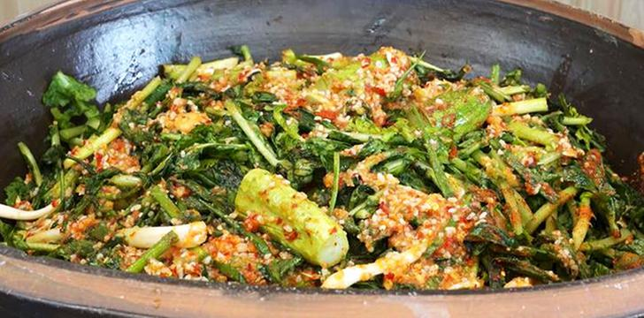
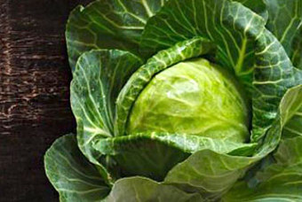
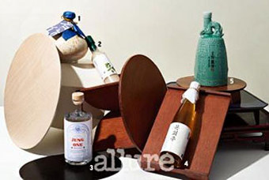
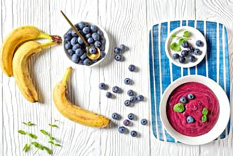

대파와 오리고기로 맛을 낸 면 요리, 카모난반
쉽게 만드는 사계절 보양식 메뉴
나를 위해, 가족을 위해 맛있게 만들어 먹어요
#보양식#오리요리

[오늘의 푸드tv]영자씨의 부엌
오이를 넣으면 더 특별해지는 봄 열무김치
크기가 커도 연한 요즘 열무,
풋내 없이 힘들게 버무리지 않고 만드는 법
#봄김치#열무김치

푸드
봄에 수확하는 양배추가 좀 더 특별한 이유
사계절 내내 쉽게 구할 수 있는 식재료이지만, 가을에 심어 이듬해 봄 수확하는 봄양배추
가 좀 더 특별한 이유 봄 양배추 VS 겨울 양배추미식가들은 양배추 앞에 계절을 붙여 말하곤 하는데,
그 이유는 양배추의 종류가 출하 시기에 따라 분류되기 때문이다. 일반적으로 우리나라는 여름에 양배추
씨를 뿌려 11~3월 수확해 제철을 맞는 겨울 양배추를 즐긴다. 한편
전성기 - 2주일 전

푸드
한 잔의 풍류, 전문가들이 추천하는 우리 술
조선시대부터 내려오는 명주와 우리 재료로 만든 진까지.
어느 때보다 드넓어진 우리 술을 바 전문가들이 추천했다.
마셔보니 궁금한 것이 쌓여, 술을 만든 사람을 찾아가 직접 물었다.
왼쪽의 동그란 받침은 브로손의 옻칠 매트.
가운데의 낮은 미니 테이블은 도잠의 ANZA 스툴.
앞쪽의 다갈색 트레이는 도잠의 DABAN 트레이.
가장 위에 올려진 소반은 브로손
얼루어코리아 - 1주일 전

푸드
운동 전에 먹으면 더욱 좋은 음식7
*주의!* 이거 먹고 운동은 꼭 가야 함 다이어트 시즌인 여름.
운동을 결심한 사람들이 하나둘씩 늘고 있다.
운동 전에 먹으면 운동 효과를 올려주는 좋은 음식들을 모았다.
#1운동 전 먹으면 좋은 음식 7
#2여름이라 살 뺀다고 운동 시작한 사람들 많을 거임.
사실 운동할 때 매우 중요한 것이 음식임.
운동 전식사는 운동 효과에까지 영향을 끼친다고 함. 그래서
비주얼다이브 - 1주일 전
푸드
깜찍한 케이크 팝 'Crazepop'의 푸드 아트
Crazepop[아이디어 래빗] 인터넷 SNS에서 활동하고 있는 'Crazepop'는 케이크를
막대에 꽂아 깜찍하고 귀엽게 연출하는 '케이크 팝(Cake Pop)'을
선보이고 있다. 사탕 혹은 아이스크림을 연상시키는 이 작은 케이크는
다양한 데코레이션으로 꾸며져 여러 가지 모습으로 장식된 것이 특징이다.
'Crazepop'의 케이크 팝은 만화,